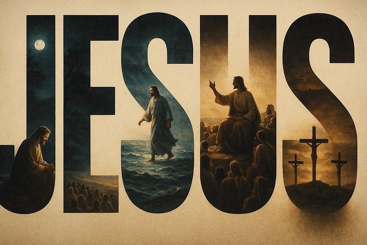

REC
4K 60FPS
HD
Deus Está Despertando Pessoas
Mas Não Sei Por Onde Começar…
Preciso Me Preparar Melhor
Cuidar de Vida Exige Preparo
A Essência do Chamado

O Que Move o Seu Coração?
Quem é Chamado, Permanece


Deus Está Despertando Pessoas
Mas Não Sei Por Onde Começar…
Preciso Me Preparar Melhor
Cuidar de Vida Exige Preparo
A Essência do Chamado

O Que Move o Seu Coração?
Quem é Chamado, Permanece